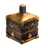
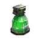

Яд браконьеров
Предметы / С врагов
Открыть в интерактивной вики →
| Вес | 6 |
|---|
Описание
Компонент, используемый для изготовления  Нейлин во Владениях Дарко.
Нейлин во Владениях Дарко.

Большая Фляга Выносливости. Её создаетНейлин во Владениях Дарко.
Открыть в интерактивной вики →
| Вес | 6 |
|---|

Большая Фляга Выносливости. Её создаетНейлин во Владениях Дарко.